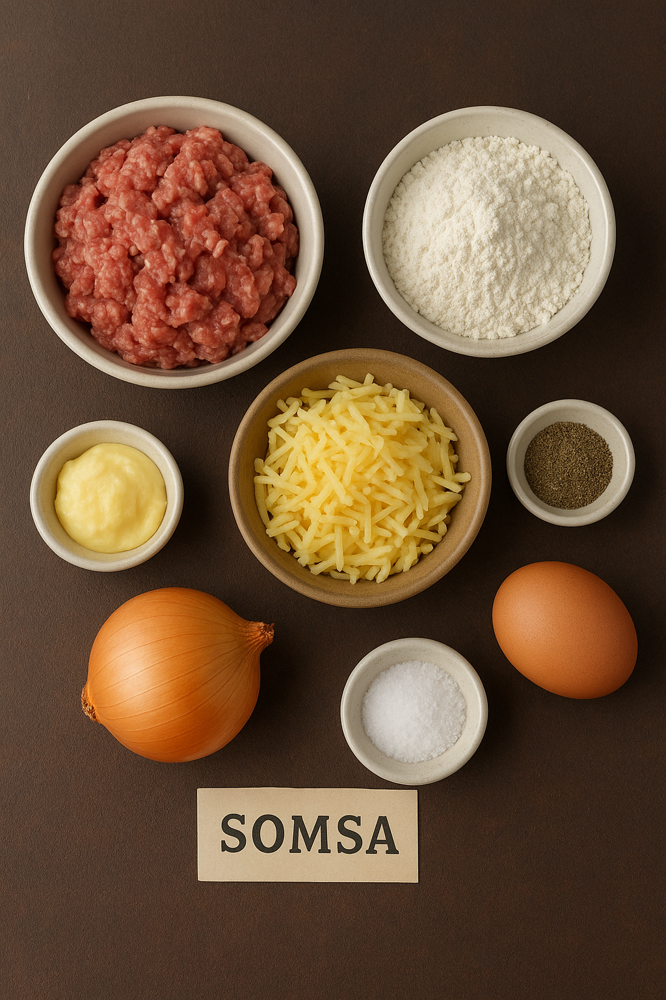

Bosh Sahifa
Somsa Retsepti
Somsa – bu o‘zbek milliy taomi bo‘lib, xamir ichiga go‘sht, piyoz va ziravorlar solib pishiriladi. Tandirda yoki pechda qizarguncha yopiladi.

Kerakli mahsulotlar
- 500 g un
- 250 ml suv
- 1 choy qoshiq tuz
- 400 g mol go‘shti (mayda to‘g‘ralgan yoki qiymalangan)
- 3-4 dona piyoz
- 100 g qo‘y yog‘i (ixtiyoriy)
- Ziravorlar: qora murch, zira
- 1 ta tuxum (ustiga surtish uchun)

Tayyorlash bosqichlari
- Xamir tayyorlash: un, suv va tuzni aralashtirib yumshoq xamir qoring, 20-30 daqiqa dam oldiring.
- Ichlik tayyorlash: go‘sht va piyozni mayda to‘g‘rang, yog‘, tuz va ziravorlar bilan aralashtiring.
- Xamirni yoyish: xamirni kichik bo‘laklarga bo‘ling, yupqa qilib yoying.
- Somsa tugish: xamirning o‘rtasiga ichlik soling va uchburchak shaklida yopishtiring.
- Yog‘lash: ustiga tuxum sarig‘ini surting.
- Pishirish: 200°C da pechda 25-30 daqiqa pishiring (yoki tandirda qizarguncha).
Bosh Sahifa